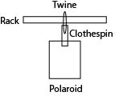

Concept

Example inspiration for my idea
Original visualization of idea. Didn't take measurements and build volume constraints into consideration
Updated sketch idea with measurement and build volume constraints in mind
The intended use case for this idea is as a display/home decor item. This is something I can put on my desk or nightstand or some kind of flat surface, so that I can see these pictures and easily access the other polaroids not on display. The polaroids would have its own place, and I'll have a section of my drawer back. Context
This is something I would keep in my room, but if I were to create multiples, they could be displayed anywhere in the home. It's basically a home decor item type thing. This idea can be recreated by anyone who wants a unique photo stand and keepsakes box to show their favorite memories or to be reminded of those memories.
Breakdown of Tasks
To start the whole design process of this idea, I plan to use OnShape for CAD modeling. I will design the box, lid of the box, and photostand on here. I chose OnShape because of it's ease of use and assembly feature. I will be able to visualise what the pieces look like together as well as making sure the parts ultimately fit together. If I run into any issues with making things on OnShape, I'll use Rhino. 2. Laser cutting
Laser cutting is a technique I will be using in the final project. I want to make a majority of the box out plywood and will use the laser cutter to do vector cuts. With the OnShape file, I plan to export it into a DXF file to be able to laser cut the box design. One thing I'll need to keep in mind is to make sure there were no exporting errors in terms of sizing. Additionally, since I'll cut plywood, I will have to adjust the speed and frequency setting of the laser cutter. 3. 3D printing
Another technique I'll use is 3D printing. I plan to 3D print the lid of the box, the polaroid stand, and clothespins. There are 2 reasons as to why I want to 3D print the box lid. One is that by making a lid that has a lip that fits with the plywood box, it'll be easier to take off and put back on when I want access to the stored polaroids. Second is that I can create a semi-closed slot on the top of the lid where the center pole of the stand will sit in and be able to prop up without additional reinforcements. I was originally going to design the lid and center pole as one piece but am unable to because of the polaroid measurements and build volume constraints of the 3D printers. 3D printing the lid will allow me to easily get details of the lip of the lid that is not doable with the laser cutter. I also plan to 3D print the main center pole and the corresponding racks. In my vision, the polaroids will hang from the racks. I plan to print each part separately because of build volume constraints as well as in case of errors. Just in case something goes wrong in the 3D printing, I wouldn't have to reprint the entire thing. The center pole will have slots that the racks will go through.

Visual representation of parts that will be 3D printed
The 4th technique I'm incorporating into this final project is interlocking parts. Interlocking parts will appear in my final project in a couple of ways. First is the lid and the box. I want to make a lid that can pop off the box, so I can easily access the stored polaroids or add polaroids into the storage box. The lid and box will be interlocked together. The other interlocking part are the fingerjoints of the plywood box. I wanted to make a box that didn't require additional reinforcements, and I will do this by utilizing fingerjoints. With the fingerjoints, the box should press fit together and be interlocked and not fall apart. I plan to continue using the pressfit idea by making a semi-closed slot in the lid where the center pole of the photo stand will sit. Additional design element
An additional design element that I will be including into this entire design is 3D printing clothespins. As mentioned, I stumbled on an STL file of a clothespin. The design includes a spring that can also be 3D printed. I intend to make a minor adjustment to the file in terms of sizing and personalization. I will be adding holes to the top of the clothespins, so I can loop twin through them and hang the clothespins from the the racks. The clothespins will hold the polaroid.

Inspiration for the clothespin idea 
Visualization of how I plan to execute the clothespin idea
Just in case the clothespin idea falls through, I have a backup idea in my mind. This idea comes from the connectors I created for the lamp assignment. I plan to create slots in the racks that will hold the polaroids. If I end up executing the backup idea, I may have to make adjustments to my CAD design of the racks and where these racks will sit with the center pole.
Timeline & Contingency Plans
Monday, May 27 Polaroid measurement for final design measurement
Tuesday, May 28-Thursday, May 30 CAD modeling of box, stand, and clothespins
Thursday, May 30 Start 3D printing process
Friday, May 31 Continue 3D printing process; redo any 3D prints with errors
Saturday, June 1 Laser cut box and assemble
Sunday, June 2 Work on any pieces that need to be fixed; redo any 3D printing errors
Monday, June 3 Work on GitHub documentation; redo any 3D printing errors
Tuesday, June 4 Continue documentation work; additional day to fix any errors
Wednesday, June 5 Showcase final project
Friday, June 7 Submit final documentation if haven't already
Bill of Materials & Sourcing Schedule
PLA filament - will print at Fluke where PLA is 5 cents a gram
String/twine - purchase from a crafts store this week (5/27-6/2)
Polaroids - my own supply